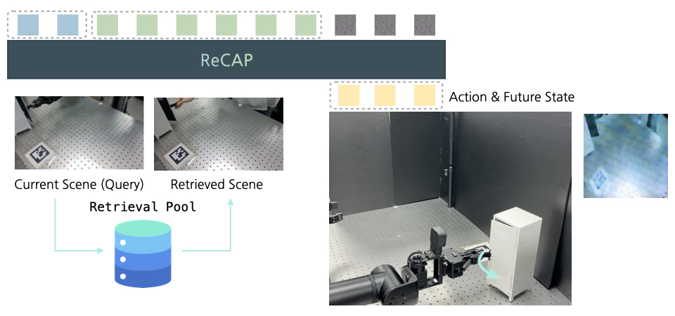

Extending a vision-language-action (VLA) policy to a new task typically requires task-specific teleoperated demonstrations and per-task fine-tuning, making adaptation costly in both data collection and compute. We show that this target-side per-task adaptation cost can be replaced by retrieval. Our retrieval-augmented policy is trained once on paired demonstrations from the target embodiment (query) and a cheaper embodiment (pool, e.g., human-hand video), then frozen. New tasks are added at deployment by simply appending pool-side demonstrations to a retrieval pool. The frozen policy conditions on retrieved trajectories at every control step, so new tasks are absorbed by indexing data rather than updating parameters.
We find retrieval especially effective on Cosmos Policy, a video-generation-based world action model (WAM): retrieval supplies coarse task progression, while the WAM's future-image objective adds a visual-consistency signal that strengthens the retrieval-conditioned actions. On PushT, retrieval provides a reusable high-level motion prior for cross-embodiment generalization to unseen goal angles; on RoboTwin 2.0 our method outperforms cross-embodiment baselines on unseen tasks; and we further demonstrate the method on a real robot.

ReCAP adapts a policy to new tasks entirely at test time. Instead of teleoperating each new task and fine-tuning (~24 GPU-hours/task for Cosmos Policy), ReCAP appends cheap human-hand demonstrations to a retrieval pool while keeping the policy frozen. Key ideas:
Experiment 1
The pool embodiment is a human hand (video with wrist pose tracked in VR); the target is a teleoperated robot. We fine-tune on a single task, open cabinet, then freeze the policy and add two held-out tasks, close cabinet and place bottle in plastic box, using only 10 human-hand demonstrations per task at test time — no retraining.
Data Collection Setup
Training — Open Cabinet (paired, fine-tuning)
Test-Time Pool — Held-Out (human-hand, no retraining)
Seen Task — Open Cabinet (fine-tuned)
Held-Out Task — Close Cabinet (added via retrieval, no retraining)
Held-Out Task — Place Bottle in Plastic Box (added via retrieval, no retraining)
Experiment 2
A 2D agent pushes a T-shaped block to a goal pose. Training pairs a triangle pusher (query embodiment) and a disc pusher (pool embodiment) at ±45°. At test time, the frozen query-side policy retrieves from a disc-pusher pool spanning goal angles from −60° to +60°, generalizing to seven unseen angles without retraining.
Train-Time Database
At training time, the query embodiment (triangle pusher) is paired with the pool embodiment (disc pusher) at goal angles of ±45°.
Test-Time Pool
At test time, the frozen query policy retrieves from a pool of disc-pusher demonstrations spanning goal angles from −60° to +60° (the seven shown are unseen) — added without retraining.
Results (query rollout + retrieved pool, side by side)
Effect of Next-State Prediction (future-image objective)
The world-action backbone jointly predicts the next observation. Removing this future-image objective weakens the retrieval-conditioned actions; restoring it recovers accurate rollouts.
Goal angle +15°
Goal angle −15°
Retrieval Attention Visualization
Where the policy attends across layers — the primary (query) stream vs. the retrieved (pool) stream.
Goal angle 0°
Goal angle −30°
Experiment 3
We take Aloha-Agilex as the target and UR5 as the pool, training on five paired tasks and evaluating on five unseen ones. New tasks are added at test time via human-hand pool demonstrations.
Pool-Embodiment Demonstrations (cheap, used for retrieval)
Query-Embodiment Training Tasks (paired, teleoperated)
ReCAP (Ours) — Target-Robot Rollouts
Method Comparison
We compare against cross-embodiment baselines. The retrieved trajectory (dashed) is not a competing method — it is the real-time reference that conditions ReCAP.
Click Bell
Handover Mic
We thank our colleagues at NAVER AI Lab for their valuable feedback and support throughout this work. We also thank Jihwan Yoon at Korea University for help with data collection.